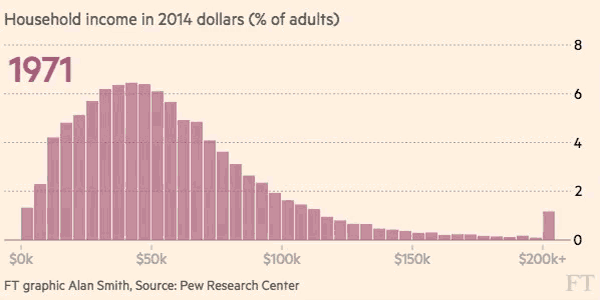

class: inverse, middle, center # Measures of Central Tendency --- # Measures of Central Tendency .left-column[ ## Review ] .right-column[ # Measures of Central Tendency .center[<img src="mean.png" width = 600>] ] --- # Measures of Central Tendency .left-column[ ## Review ] .right-column[ # Other measures The expectation is a measure of centrality (*of probability mass*). <br> But we can easily come up with other measures of central tendency. ] --- # Measures of Central Tendency .left-column[ ## Review ## Shortcomings of E[X] ] .right-column[ # Shortcomings of the Mean  <br> + What's happenning to the distribution? + What's happening to the mean? ] --- # Measures of Central Tendency .left-column[ ## Review ## Shortcomings of E[X] ## Median ] .right-column[ # Median of numbers Let $a_1, \cdots, a_n$ be a list of *numbers*. <br><br><br> If $n$ is odd, the **median** is found by + sorting the numbers (and renumbering the indices) + finding the middle number #### Example The median of 3, 5, 5, 1, 0, 7, 2 is: ] --- # Measures of Central Tendency .left-column[ ## Review ## Shortcomings of E[X] ## Median ] .right-column[ # Median of numbers Let $a_1, \cdots, a_n$ be a list of *numbers*. <br><br><br> If $n$ is even, the **median** is found by + sorting the numbers (and renumbering the indices) + taking the avg of the two middle numbers #### Example The median of 3, 5, 5, 1, 0, 7, 2, *4* is: ] --- # Measures of Central Tendency .left-column[ ## Review ## Shortcomings of E[X] ## Median ] .right-column[ # Median of a distribution The <b>median of the distribution of the random variable $X$</b> is <i>any</i>.red[*] number that satisfies the inequalities: <center><img src="median_ineq.png", height = 80> <br><br> <font size=3>Meaning:<br> <i>half of the probability mass lies before the median,<br> half lies after it<i></font> ] --- # Measures of Central Tendency .left-column[ ## Review ## Shortcomings of E[X] ## Median ## Comparison ] .right-column[ # Comparison .center[<img src="fig1.png" height=300>] ] --- # Measures of Central Tendency .left-column[ ## Review ## Shortcomings of E[X] ## Median ## Comparison ] .right-column[ # Comparison .center[<img src="fig2.png" height=300>] ] --- # Measures of Central Tendency .left-column[ ## Review ## Shortcomings of E[X] ## Median ## Comparison ] .right-column[ # Comparison .center[<img src="fig3.png" height=300>] ] --- # Measures of Central Tendency .left-column[ ## Review ## Shortcomings of E[X] ## Median ## Comparison ] .right-column[ # Comparison .center[<img src="fig4.png" height=300>] ] --- # Measures of Central Tendency .left-column[ ## Review ## Shortcomings of E[X] ## Median ## Comparison ] .right-column[ # Comparison .center[<img src="fig5.png" height=300>] ] --- # Measures of Central Tendency .left-column[ ## Review ## Shortcomings of E[X] ## Median ## Comparison ] .right-column[ # Comparison .center[<img src="fig6.png" height=300>] ] --- # Measures of Central Tendency .left-column[ ## Review ## Shortcomings of E[X] ## Median ## Comparison ] .right-column[ # Comparison .center[<img src="fig8.png" height=300>] ] --- # Measures of Central Tendency .left-column[ ## Review ## Shortcomings of E[X] ## Median ## Comparison ] .right-column[ # Comparison .center[<img src="fig9.png" height=300>] ] --- # Measures of Central Tendency .left-column[ ## Review ## Shortcomings of E[X] ## Median ## Comparison ## Mode ] .right-column[ # Mode of numbers Let $a_1, \cdots, a_n$ be a list of *numbers*. <br><br><br> The **mode** of a list of numbers is *any* number that has maximum frequency. <br> + The mode of 1,1,1,2,3,4 is:<br><br> + The modes of 1,1,3,2,2,4 are:<br><br> + The modes of 1,1,2,2,3,3 are:<br><br> ] --- # Measures of Central Tendency .left-column[ ## Review ## Shortcomings of E[X] ## Median ## Comparison ## Mode ] .right-column[ # Mode of a distribution The <b>median of the distribution of the random variable $X$</b> is any number that has maximal probability. If a distribution has many modes, it's called *multimodal*. ] --- # Measures of Central Tendency .left-column[ ## Review ## Shortcomings of E[X] ## Median ## Comparison ## Mode ] .right-column[ # Comparison .center[<img src="fig10.png" height=300>] ] --- # Measures of Central Tendency .left-column[ ## Review ## Shortcomings of E[X] ## Median ## Comparison ## Mode ] .right-column[ # Comparison .center[<img src="fig11.png" height=300>] ] --- # Measures of Central Tendency .left-column[ ## Review ## Shortcomings of E[X] ## Median ## Comparison ## Mode ] .right-column[ # Comparison .center[<img src="fig12.png" height=300>] ] --- # Measures of Central Tendency .left-column[ ## Review ## Shortcomings of E[X] ## Median ## Comparison ## Mode ## Other ] .right-column[ # Other measures Recall that the *median* of a distribution is any number $m$ such that 50% of the probability mass lies before it, and 50% lies after it. + If we choose any other threshold $p%$, then $m$ is called the **p$^{th}$ percentile** or the **0.p quartile** + If the area between the 25-75 is called the **interquartile range** .center[(Usually some tie-breaking rule is agreed upon)] ] --- # Measures of Central Tendency .left-column[ ## Review ## Shortcomings of E[X] ## Median ## Comparison ## Mode ## Other ] .right-column[ # Other measures .center[<img src="fig13.png" height=300>] ]